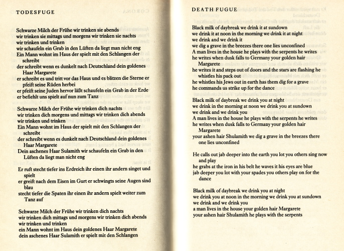
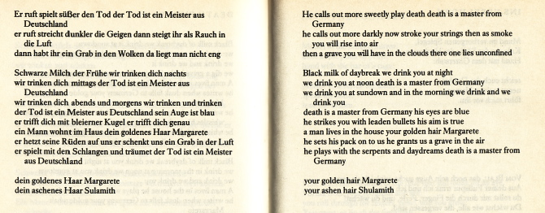

february - january 2010


When I retired from my job teaching creative writing at Glasgow University last September I was given a three-block version of my triptych which is in access to the silence and outside the narrative.

The triptych in these books is presented as a three-page sequence, but that was a compromise for the book format, my original idea was for the work to be seen as a vertical spaced column.

Artist Jacki Parry made three blocks imprinted with my original texts, so I have been able to put the work up vertically as intended.
I've put them up at the side of the window in my room and it’s not ideal: maybe someday I will put them against a dark background as frame in another place. Ideally, to speak of that, I always thought a nice spot for them would be as a two-hundred foot installation besides the United Nations Building in New York…

“Fushionless”. A Scottish word pronounced as to rhyme with Russianless, and meaning emphatically without energy, spirit, pith. Perhaps also, in terms of feeling, physically hollow and wasted.
Sometimes used also to mean inept almost without “backbone”, as a manager might say to a football team that has been soundly beaten, That was a right fushionless display.
Fushionless.

In bed with a cold. The chest again. I had hoped to be out and about by Wednesday afternoon to take part in a BBC poetry recording for a radio programme, but after they had asked me to send them some poems ahead then knocked back a couple I sent —Epithalamium and Being a Human Being— I decided I would rather stay in bed with my cold instead. They wanted me to read an uncontroversial humorous dialect poem from 35 years ago “to set the tone”. Get back in your box, Leonard. Our box, that is.
Being a Human Being right enough is dedicated to Mordechai Vanunu. Next thing I might be asking the BBC to show charity appeals for Gaza. Reminds me of the story of Schoenberg in America, when he was asked to write music for The Miracle of Fatima or some such, he asked for a staggeringly large fee. When told by the producers they couldn’t possibly afford it, he replied “But if I’m going to work as a prostitute you will have to make it worth my while.”
The programme I was invited onto had Brian Turner an American soldier a year or so ago reading from his book of poems Here Bullet about serving in Iraq. The resident programme host cited blurbs that “Twenty First century poetry starts here” and how comparison had been made with Wilfred Owen. An insult to Owen, a great poet. The American's book of tastily melodramatic vignettes would more accurately have been called not Here Bullet but Occupation Recollected in Tranquillity.
Ere I go back to bed, a little poem for the day's occasion.
Poetry Please!
for whom poetry is
a warm cup of cocoa
held to their bosom
& who go hmmm..... hmmmm.....
at public readings
as if a cow’s tongue
was slowly licking their genitals
The reading I am giving in Glasgow in four week’s time on March 11th is already sold out. I only found out a couple of days ago because I wanted to get a couple of comp tickets for a friend. No joy.
The venue, the Burns Room in the Mitchell Library, is the same where I gave a talk on RD Laing and Beckett last summer. That talk also sold out, and with a £3 a head admittance charge the organisers that day would have made a decent profit, an amount rather more than what they paid me. That was fine by me at the time I was just glad the talk seemed to go well.
Now having agreed for the same basic deal to give a reading in the same venue, I find afterwards that not only has it quickly sold out, but the people who have bought the tickets to hear me have been relieved this time of no less than £7 per head for the privilege. I suppose I better not make much fuss about this otherwise some of the Glasgow press and Glasgow Council (who sponsor this festival) will come out with their seen-before guff about Glasgow leftwing writers like me being “difficult” and “thrawn”.
The rake-off from my reading in a month’s time I imagine will go into the pot needed to pay for the hotels and sizeable fees of the various media celebs who are travelling all the way up from England so that Glasgow Council can let city folk see them in the flesh. I’ve no doubt that if I was one of these whom the festival organisers think of as “recognised in England, and in the English papers” I not only would have no difficulty getting complimentary tickets, but council culture committee members would consider it a significant honour to be allowed to wipe my bum should I go to the toilet.
There’s nothing personal against the likes of me in any of this, it’s just my culture at a personal and language level that I have never given up on at least trying to engage with as honestly as I can. A culture that I grew up with against the grain of an innate and implicit establishment opinion that it was a language without real value in a place without real value in a culture without real value. Real value, real culture was always supposedly to be found “elsewhere” in other dominant narratives.
So that’s the context of what’s happening on March 11th. I still look forward to it. My book ain’t called outside the narrative for nothing.

Looking at Blair shaking Netanyahu’s hand in yesterday's entry reminds me of a letter I had published in the Glasgow Herald in 2001 a few days after 9/11. The reference in the letter to the King David Hotel is that it was the hotel in Jerusalem was where in 1946 the Jewish Irgun carried in explosives in milk crates to the basement and detonated a noonday explosion killing 91 people.
Thursday September 13th 2001
In February 1991 I wrote in a published pamphlet against the bombing of Iraq, "One would have thought that it might at least have occurred to people that there will be Iraqi survivors, or their descendants, who will feel that if there is any justice in the world, the cities of Britain and America will one day get at least a little of what their citizens were apparently so indifferent to inflicting on the towns and cities of Iraq."
What has happened in America now is not justice: there is no justice in murder, in or out of uniform, no justice in killing thousands of people just getting on with their work, and the people who went to try and save them. There is certainly no justice, but there was certainly an inevitability that action would one day be taken against America, albeit no-one could have predicted that it would be on such a massive catastrophic scale.
Ten years after that bombing of Iraq and that little pamphlet of mine, with another 500,000 Iraqi children dead because of sanctions, according to official figures a couple of years back, where now. More of the same, apparently. Mr Blair, the evangelist who varies between crackdowns and crusades, has found a cause to combine both. No historical context of course, it is to be against "evil". And though it may be a crusade, we should not give the word a capital letter. People might get the wrong idea. After all, as he said in a speech today "The vast majority of Muslims are decent people." That’s alright then.
No-one in government, here or across the Atlantic, will link the week’s events with the recent further 2 billion dollar sale of attack jets to Israel. After all, as Mr Netanyahu said in a press conference on Wednesday, we must all unite against “terrorist states like Iraq, Iran, Afghanistan, and the Palestinian entity”. And where did he give this press conference? The King David Hotel, Jerusalem.
The ironies of history continue.


Reading Walt Whitman’s prose lately including his essay “Poetry today in America” it is interesting to see him well over a century ago fingering the class nature of British literature, and advising his contemporary American writers to digest the other great European national literatures as a counter. He did admire Tennyson’s “verbal melody, exquisitely clean and pure, and almost perfumed, like the tuberose, to an extreme of sweetness”; but he did not consider such to be a good influence for a wholevoiced America “the great radical Republic, with its ruffianly nominations and elections; its loud, ill-pitch’d voice, utterly regardless whether the verb agrees with the nominative”.
“From first to last … Walter Scott and Tennyson, like Shakespeare, exhale that principle of caste which we Americans have come on earth to destroy. Jefferson’s verdict on the Waverley novels was that they turn’d and condens’d brilliant but entirely false lights and glamours over the lords, ladies and aristocratic institutes of Europe, with all their measureless infamies, and then left the bulk of the suffering, down-trodden people contemptuously in the shade.
…Tennyson.. Never one democratic page; nay, not a line, not a word; never free and naïve poetry, but involv’d, labor’d, quite sophisticated—even when the theme is ever so simple or rustic, (a shell, a bit of sedge, the commonest love-passage between a lad and lass,) the handling of the rhyme all showing the scholar and conventional gentleman; showing the laureate, too, the attaché of the throne, and most excellent, too; nothing better through the volumes than the dedication “to the Queen” at the beginning, and the other fine dedication, “these to his memory” (Prince Albert’s,) preceding “Idylls of the King.””
Reminds me of one British poet a few years ago banging on about there being “no such thing as voice” in poetry, and rubbishing the baleful influence of American poetry on some British writers. This geezer true enough has in the intervening years received more than one royal favour: Whitman puts such criticism in its perspective.


Sunday February 7th Oxgangs Community Library Edinburgh 2.30
Saturday February 13th Maggie Centre Western Infirmary Dumbarton Road Glasgow (reading with Liz Lochhead part of Lapidus Scotland daylong event) see here
Tuesday Feb 23rd Ty Newydd, National Writers' Centre for Wales course event
Monday March 1st Poetry Live! schools event Glasgow Bute Hall Glasgow University morning, Edinburgh Lyceum Theatre afternoon: seehere
Sunday March 7th Bill Speirs memorial dinner event with Ghazi Hussein, Rab Noakes and others Old Fruitmarket Candleriggs: see here
Thursday March 11th Mitchell Library Glasgow AyeWrite Festival 7.30
Thursday April 22nd Stirling University Literary Society 7.30
Saturday May 8th Ullapool Book Festival 4pm.

Ewa Jasiewicz
Frank Barat: You were in Gaza a year ago during Operation Cast Lead. Why and how did you and other activists go to the Gaza Strip?
Ewa Jasiewicz: Myself and several solidarity activists from Lebanon, Spain, Canada, Australia, Italy, UK, Ireland and Greece managed to get into Gaza aboard the Free Gaza Movement's (FGM) Dignity boat. FGM has sailed five successful missions to Gaza from August to December 2008, bringing in human rights workers to build political solidarity activism, to break the isolation of ghettoized communities and directly confront Israel's illegal and brutal siege.
FGM's missions are political -- we know Palestine is not a charity case, and that the solutions to a 60-year policy of ethnic cleansing, apartheid and militarized ghettoization are not extra bags of flour, medicine, new tents and millions in aid, but political will and direct action. This is currently unforthcoming from governments around the world, so our actions are about directly applying international law from the grassroots up because it isn't being respected and is being violated, daily, from the top-down -- the siege of Gaza and occupation of Palestine is international, the states supporting it either with their silence or direct complicity in economically supporting Israel are co-occupiers and collaborators in war crimes against the Palestinian people, along with Israel.
FB: Previously you spent some time in the occupied West Bank during various Israeli operations (more particularly in the Jenin refugee camp). What were the main differences between the two places and what did you expect to see in Gaza? Did you expect the attack?
EJ: I didn't expect the attack -- but people in Gaza and the Hamas authority did expect an attack because the ceasefire had expired and Israel was sabre-rattling, threatening to eliminate, as always but with greater intensity and focus, resistance leaders -- military and political -- and their supporters. There was an increase in unmanned aerial vehicles flying 24/7. I had experience of smaller operations in the West Bank in Jenin and Nablus following Operation Defensive Shield in 2002. Operation Defensive Shield was massive, hundreds of Palestinians were killed, the heart of Jenin refugee camp was bulldozed and dozens of civilians massacred in the process. By the time I came, all the ruins and trauma were still very fresh but the worst of the destruction and killing had subsided.
The smaller invasions were carried out under curfew, involving hundreds of troops, carrying out house-to-house searches, and mass arrests with every man aged between 15 and 50 rounded up, interrogated and beaten. A typical operation, with groups of children throwing anything they can at tanks and armored personnel carriers (APCs) in the street -- and often getting shot at for doing it. There would be sporadic resistance at night from fighters, but many of the most experienced had been killed at that point. Troops would carry out collective punishment like home demolitions using bulldozers or explosives and civilians would be used as human shields. What was different at that time in the West Bank was that a lot of the Palestinian Authority's (PA) infrastructure and military infrastructure of the resistance -- fighters and leaders -- were destroyed during Defensive Shield by F-16 fighter jets. Israel was executing its cyclical strategy of having decimated the leaders of the armed and political resistance of major political factions, moving on to target the social infrastructure -- community leaders, social activists -- and continuing to arrest relatives of the "wanted" and trying to bait out and kill the younger, more inexperienced fighters.
Because of the tunnels, fighters in Gaza have had access to more sophisticated and threatening weaponry than their West Bank counterparts, so Israeli aggression has been more intense in Gaza and heavily reliant on aerial bombardment. Since the withdrawal of the colonists and military bases [in 2005], this has increased.
In the West Bank, activists could be much more mobile and confront and dialogue with soldiers. In Gaza 2009 that was impossible. I only once saw soldiers -- a special forces soldier trained his gun and apparently shot at our ambulance. In the West Bank we were often between tanks and APCs and following and observing soldiers close-up. If you got close to soldiers in Gaza they'd kill you -- that is what everyone kept telling us.
FB: What did you plan to do there? Did your plans changed once the invasion of Gaza started?
EJ: I planned, as had other activists, to work with Palestinian partners -- civil society groups, unions, farmers and fishermen, local campaigns for the right to education and to end the siege. My role was going to be to coordinate and guide visiting delegations coming aboard FGM boats along with [Irish human rights activist] Caoimhe Butterly. Once the invasion started, it became immediately clear that what we needed to do as foreign activists was to fulfill our role of witnessing and reporting, mitigating the risk to those most likely to be attacked -- which during invasions are the medical services.
The Israeli occupation forces killed 16 rescuers in 22 days and injured dozens more. By volunteering with medics we attempted to deter attacks on them by informing the media and our embassies that we would be accompanying all services -- 13 of the medics killed were from the Civil Defense services. We did not differentiate between "independent" and "government" services; all must be protected under international law. Also, we didn't just sit in the ambulances, we physically carried the injured and dead and tried to assist where possible Secondly, we could remain mobile -- ambulances were the only vehicles moving around 24 hours; we needed to be able to document and report on the attacks as fully as possible. Thirdly, in our mobility and proximity to the front line we could witness the effects of the bombardment on civilians in their homes, and take testimonies from families and Palestinian human rights workers inside hospitals.
FB: Could you describe a day in Gaza during the invasion?
EJ: The constant sneer of surveillance drones, repetitive bombing and crashing sounds, some close some further away, muted panic, empty streets, rubble everywhere, ambulance sirens wailing endlessly, screaming relatives coupled with the groans of the bloodied and dust-covered crushed and injured, medics praying and smoking, heart-beating perpetual ratcheted-up adrenaline, a constant readiness for the next strike and yearning for it to all end, endless stream of bodies and blood-soaked stretchers, cyclical dread, pierced with fresh-surges of shock and horror unabsorbed, and a deep fear of the night and whether we would make it through and whether each ambulance run might be the last. None of the fear paralyzed us but nevertheless it was present. But we all early on accepted we could die, and took on the risks because it was worth it, the Palestinian people are worth it. We wanted to save lives and I know I let go of my attachment to mine, inspired and encouraged by the bravery of those around me, and their willingness to make the ultimate sacrifice for the sake of others.
FB: What was the feeling of the population on the ground? How were they surviving and responding?
EJ: Everybody was terrified but defiant. The feeling on the ground was that anything could happen, all the red lines had been crossed. Not just with this operation, we have to remember that Operation Cast Lead was only an intensification and a drastic one at that, of an existing policy of massacre and deliberate targeting of civilians and civilian infrastructure, but in [the northern Gaza refugee camp of] Jabaliya, many of us were expecting another Sabra and Shatila with all witnesses banned from seeing the worst and with media being attacked, and tanks moving in closer and close, we felt that the atrocities already happening signified more could come and on a much wider scale.
FB: What was the most useful thing you think international volunteers were able to achieve and contribute? What did Palestinians in Gaza think of your presence there?
EJ: The community were glad we were there and kept telling us, "Please report what you see, we cant even believe this is happening to us, let the world know, it's your duty to speak out about what you witness." And that's what we did, through TV and radio interviews, our own written reports, some of us wrote books too: for example, Vittorio Arrigoni (Italy) Gaza, Stay Human , Sharyn Lock (UK) Gaza Beneath the Bombs , myself Gaza: A Ghetto Unbroken . Some of us made films, like Fida Qishta and Jenny Linnel, and documentaries on the phosphoric bombardment of Khoza. Alberto Arce and Mohammad Rujailah produced To Shoot an Elephant .
I think we contributed to the testimony of the Palestinian community that white phosphorous was being used, that civilians were deliberately being targeted, that hospitals, schools, emergency services were being targeted. And that counteracted Israel's propaganda. Also, I know for a fact that we lifted the spirits of the medics we worked with; they felt they had a witness with them in case of their death, and a possible small bit of protection against Israeli attack. Everybody needs a witness when they're going through hell -- wherever and whatever that hell is -- it's a form of solidarity, of verification, that the unbelievable really is happening to you. Also, we were urging people on the outside to step up their protests and direct actions and advocacy for boycott, divestment and sanctions. Getting that narrative out was important too, peoples' eyes were opened and many people wanted to get involved and deepen their activism.
FB: Could you recount one event that truly shocked you during the invasion?
EJ: There were so, so many. Probably the bombing of a house by an F-16 just a few feet away from four of our ambulances. I was in the passenger seat with my hand on the door, my friend and driver told me just wait, wait a little, and suddenly there was this enormous explosion -- everything went bright fire orange and rubble and debris showered our ambulance. One of our drivers was injured and needed to be carried out on a stretcher. Our exit route was blocked by rubble, a family was screaming and gathering their belongings and getting out, we were stumbling with our casualty and surveillance drones were thundering above, and we feared a repeat strike, more casualties, and losing four ambulances when every single one was vital. We cheated death that night. The Israelis saw us and our lone movement in the streets of Jabaliya, and bombed a house less than 10 feet away from us -- this is a criminal, reckless use of force.
Another was the bombing of the Beit Lahiya Elementary School with white phosphorous. We arrived in our ambulances after evacuating dozens of residents suffering from phosphoric inhalation and after the school had taken a direct hit. I was masked up but the stench and smoke was still penetrating, and when we got there a second round exploded above us, I was frozen to the spot and could see these burning blobs raining down next to me, I had to be screamed at to move and find shelter. The refugees in the school were screaming and crying under a flimsy metal shelter in the school yard. The third floor of the school was on fire. We brought Bilal Ashkar, aged seven -- just this limp boy -- into our ambulance. He'd been hit by the phosphorous shell and thrown down the stairs of the school by the force of the explosion. He was dead on arrival.
FB: A ceasefire was declared on 18 January 2009. Did things change much after this? What did Gaza feel like and look like after the ceasefire?
EJ: The Israeli occupation forces flew F-16s over people returning to pick up the pieces of their shattered lives in Ezbet Abed Rabo [neighborhood near Jabaliya], drones continued to sneer above us every night. There was this hollow humiliation and undigested horror, and loss, such a profound sense of dislocation and loss -- of lives, of the loved, homes, whole communities, streets, mosques, shops, gone. People literally felt physically lost in their own neighborhoods. It was like another Nakba [the forced expulsion of Palestinians from their homeland in 1948 when Israel was created]. People felt mocked by the international community. "They're laughing at us, the whole world doesn't care, they're mocking us," was what we frequently heard. It felt like a tsunami had hit.
FB: Many reports coming from UN bodies, aid agencies and human rights organizations came out very quickly in the months following the invasion. Most of them agreed on the fact that war crimes and possible crimes against humanity were committed during the Israeli attack. Did you ever witness actions that for you were crimes of this magnitude?
EJ: Absolutely. The targeting of civilians and civilian areas, the reckless and wanton destruction of property, the disproportionate and indiscriminate use of force, seen with the bombing of the Beit Lahiya School, the Samouni family massacre, the F-16 bombardment of the Hamdan children in Beit Hanoun, the utter disregard for our ambulances, the blocking of access to the injured resulting in hundreds of deaths, the extrajudicial killing of Sayed al-Seyam and Nazar Rayan and scores of their family members. We picked up so many shredded men (and some women too) axed by heavy-duty bombs released by surveillance drones -- these can carry a 150 kg payload and are sophisticated enough to detect the color of a person's hair. According to the al-Mezan Center for Human Rights, proportionally, most people killed [during the invasion were] by UAVs followed by F-16s.
FB: A few weeks ago, 16 aid agencies issued a report saying that the international community had "failed Gaza." On the ground things have not changed at all for ordinary Palestinians in Gaza but have gotten worse. Keeping this in mind, what do you think is the role of popular resistance or citizen activism?
EJ: Yes, the international community facilitates and pays for Israel's occupation, and pathologizes and de-develops Palestine in the process. Ordinary citizens have a responsibility not to fund or politically support [an] industry which hides a relentless project of ethnic cleansing and colonization of Palestine. [Instead, citizens have a responsibility] to build a critical mass of political pressure by all means available -- through BDS and direct action -- to bring about sanctions against Israel and to enforce international law by targeting the companies that violate it with respect to Palestinian human rights, and to expose Israel in the same way [apartheid in] South Africa was exposed and eventually brought to an end.
FB: What in your opinion is most urgently needed in Gaza? What can people do to help and change the status quo ?
EJ: Palestinians in Gaza should answer that, but what many say, is that what Gaza needs is the rest of Palestine. People living in camps in Jordan, Lebanon, Syria and the West Bank want to be reunited with their families and homes. The inalienable and legal right of return for Gaza's and all Palestinian refugees needs to be enacted. The Israeli tactic of divide and torture, of chopping up the Palestinian community, is a long-term tactic designed to break down the strongest weapon against ethnic cleansing that Palestinians possess -- memory, community, family. As long as you have a people who remember their homes and lands, and know each other, refer to one another as cousin, uncle, sister and brother, and can ask, "Which home/family are you from?" then the struggle can never be alienated or abstracted. Palestinians in Gaza need to have the means to speak and act for themselves and not be spoken for, and to have access to the rest of the world -- twinning relationships and projects between schools, mosques, universities, hospitals, youth groups, initiatives -- these are all means to break the isolation inside and build a more intimate and motivated solidarity movement on the outside. Aid is not the answer. Solidarity is.
FB: A year after the war, people marched in hundreds of cities around the world to "commemorate" those horrific events. What do you think of those demonstrations? What type of effect do they have on Palestinians in Gaza? Are they useful at all in your opinion?
EJ: The rallies are a focus point; we do need collective mourning, remembrance and action in our streets. But its also important to target companies violating international law and which are key in perpetuating Israeli apartheid, which we must always remember is not limited to Gaza -- the West Bank is 15 times larger than Gaza and is full of mini Gazas -- Bantustans surrounded by Israel's apartheid wall. Companies like Veolia, Alstom, Caterpillar, Elbit Systems, CRT Holdings and Carmel-Agrexco could be charged with aiding and abetting war crimes of ethnic cleansing and illegal colony-building. The boycott, divestment and sanctions call from Palestinian civil society needs to be responded to and supported -- actively, daily. We are all complicit in the reproduction and reinforcement of the occupation -- it is an international occupation, it is an international issue, and international solidarity for Palestinian human rights can create the conditions for a local solution.
FB: Will you ever go back to Gaza?
EJ: I am going back! I only meant to leave for a month, I deeply miss Gaza. It became like a home to me, I miss my friends and "family" there. Like so many activists that go to Palestine, what we witness never leaves us. We learn from and are humbled by the people that we work with, and it's an honor and a privilege to participate in this struggle.
We halted on our path, and to our left a great drop o’erlooked a single plain that stretched to the horizon. No tree or plant could be seen thereon, no trace of animal or growth.
Yet in the middle distance could be discerned what seemed a vast crater full to overflow, a mound of teeming specks heaving and twisting in the gloom.
That is the great crater of those studying and teaching “The Waste Land” said my ancient Guide. His finger swept along the horizon, and faintly could be seen yet other craters, yet more mounds distant, separate and afar.
We gazed awhile on this boundless desolate world of hermetic worlds, then struck on inward in silence, my mind looking forward yet keener to life and warmth.

The gable end in the Bogside in Derry on which a local man painted in 1969 YOU ARE NOW ENTERING FREE DERRY has become one of Ireland’s best known images. The houses onto which the wall stood have gone with redevelopment, but the wall itself with its famous slogan still stands on its own today.
The words of the slogan were suggested by activist Eamonn McCann, taking as cue the words from a free speech campaign in a Berkeley University campus in America. Now GuildHall Press in Derry have published a book Free Derry Wall priced £12.95, and edited by Jim Collins and Adrian Kerr. It's amply illustrated and with quotes from sundry people (including myself, on a visit to Derry to do a reading) as to what the wall and its words represents to them today.

On a few occasions it has been temporarily repainted to show solidarity with contemporary events: it was repainted for a while in January 2009 to show solidarity with the people of Gaza under bombardment, and it has also been painted to mark a gay pride event and a campaign against domestic violence. The third photo here shows the wall after a local community project to paint it celebrating “the future” in March this year; the man shown smiling walking away from it is Eamonn McCann.

As part of my original overall response (some of which was performed around 1990 at the Third Eye Centre in an hourlong performance piece called “Lentil Soup, Diagnostic” which included making lentil soup onstage and each member of the audience getting some to take home in a medicine bottle) I made a draft of forty-eight pieces of monologue, poem, exclamation, reflections. I used eleven of these short pieces in a sequence I subsequently called “Hesitations — Monologues for Dancing” which was published in 1995.
The orginal 48 have now been put online in pdf form in Tim Atkins's poetry emagazine Onedi t. You can read and/or download the draft sequence which I called “A Traverse Sequence” at the current issue ofOnedit here

I happened to be rereading the stated criteria of one of the judges of the Backward Prize for Poetry published a few days after the award was made not long ago:
“….be aware that the initial trawl is essentially a negative one as books have to be excluded much more urgently than included. Few poems, and even fewer books, are faultless, but how many chances do you give? Not many. A broken phrase, an absurd metaphor, a cliche, a wrong note can all be fatal. Especially if they crop up early in a book. The judge is on notice for the next one and three-strikes-and-you're-out suddenly seems a dangerously liberal policy. Of course this is the responsibility of editors as much as poets…..you should be aware what a blessed relief it is, after being confronted by book after book of flatly efficient – and less efficient - poems, to come across sprung lines, rhythm and, even the odd rhyme. On a related point, if you are going to use fancy line breaks or spacing or layout on the page, have a damn good reason for doing it.”
A damn good reason. Ho yes, long live our left indent, the basis of our constitution. And nothing “dangerously” liberal, let alone Left, god forbid.
It is a “blessed relief” to turn from this stuff, the British “poetry” world of Royal / New-Labour-committee gongs and titles, the gamut of annual separately-named but similarly outcomed Horlicks Prize for Fastidiously Crafted Slim Volumes; and look with relief, maybe sometimes as much for what it is not as for what it is, at the work of a practitioner such as Nick e Melville some of whose output is within the lettrist-concrete poetic tradition in Scotland.
That tradition in the work of poets like Ian Hamilton Finlay and Thomas A Clark, has inclined to the rural and idyllic. Melville’s work on the other hand has been urban, with a sense of alienation, a very personal humour, and sceptical class awareness in its take on things. A deal of good stuff has come and gone in small press publications. Par for the course.
A new book of Nick e Melville's is out, selections and dissections which like Finlay and Clark before, includes sequenced work that reveals itself as a rhythmic serial with the rhythm of the turning of the pages establishing the basis of the rhythm itself. But Melville’s world is his own. The sequence “Family Matters” goes by stepped magnification from this:

to this:

Nick e Melville’s selections and dissections can be bought online from WordPower here. Some of course will say it is not their cup of tea. All I say is thank god it is not yet another cup of Horlicks.
A large crowd today at the funeral of Kay Carmichael, whose expressed opinions and professional activity on behalf of social justice influenced amongst other matters the setting up of the children’s panel system in Scotland which stopped children being dragged through criminal courts; and the pioneering Special Unit in Barlinnie Prison, which drastically reduced in-jail violence and aggression in some of the most violent prisoners, including murderers, by giving them a place where trust, communal responsibility, and artistic creativity were all encouraged.
Kay was also a lifelong campaigner against nuclear arms, and was a founder member of a women’s anti-nuclear peace group. Women from that peace group today performed a poem Kay had written for them:
We
We are a group of women.
We came together in anger
but work together in love.
Anger drove us to resist, rebel.
Weapons and war are our foe.
Love drives us to cherish
our land
hold each other by the hand
and say NO.
Kay was 84 when she died. She was a good friend to many, including myself when we got to know each other in her later years. She was also a good friend of what is worthwhile in the world.

I’ve been sent a copy of the DVD of excerpts from an event held in October 2006 in Glasgow commemorating the life of the poet and radical cultural activist John la Rose. A guide to John La Rose’s life and the esteem in which he was held can be read in Linton Kwesi Johnson’s obituary of him in 2006 in the Guardian here
The issued DVD features John La Rose himself, Alasdair Gray, Roxy Harris (a review of whose Language and Power can be found on the Online Poetry and Prose page of this website), Linton Kwesi Johnson, James Kelman, myself Tom Leonard, Raman Mundair and filmaker Horace Ové.
On the DVD, John La Rose filmed in informal interview in 1990 speaks of colonialism, culture and self-determination; Roxy Harris reads a memorial tribute; Horace Óve recounts some memories; James Kelman speaks about John La Rose and writer-instigated events of cultural activism in recent years in Scotland. The DVD also includes an Alasdair Gray dramatic dialogue in which Alasdair takes part; and there are short poetry readings by the poets Linton Kwesi Johson, Raman Mundair, and myself.
The DVD runs for 110 minutes and can be obtained by sending a cheque for £10 including postage to:
Street Level Photoworks, Trongate 103, Glasgow G1 5HD.
Ah, fair Poesie! Bounteous Albion! I read that in this, the year of Our Lord two thousand and ten, Her Gracious Majesty has been moved to award a Gold Medal for Poetry.
The weight of the medal has not been made public. So the actual worth of the award, when melted down, can unfortunately only be guessed at.
One pound of lentils
one pound of carrots
half pound of turnip
medium to large onion
Salt and pepper
A sizeable pot to comfortably hold 3 and a half to 4 pints of water
Wash 1lb lentils in pot. (swirl them in the pot with three different lots of water three times, tipping the excess water over the edge of the pot leaving the lentils in a wet heap.
Chop 1lb carrots, add.
Chop half pound turnip, add.
Chop onion, add.
Now pour in the 3 and a half to four pints of water onto the pile of stuff in your pot, stirring to keep the lentils from sticking to the bottom.
Bring to the boil, stirring occasionally to prevent lentils sticking. As water turns creamy on top, lower the heat.(Or with electric perhaps pull it away from the ring a bit). The trick is to bring the soup to the boil in a controlled way, not letting it boil over. If it does it doesn’t matter too much but it’s better not to. The carrot and turnip kind of foam as the soup approaches boiling, which is why there can be a surge of boil-over, like heated milk.
When you have the soup near boiling, lower the heat. Now is when you put the lid on the pot, the object being to get the minimum heat which with the upward pressure of steam on the lid of the pot, makes the soup slightly more than simmer. You have got it right when the pot lid lifts gently a bit every few seconds and releases the steam. You might have to wait a bit before the first lift. Wait.
When you see the soup first come to boiling, or when you lift the pot lid to see how it’s getting on, do not remove any at all of the scum on the top of the soup, that will disappear back into the soup; and again, a short time after it has boiled and is now simmering, if you lift the lid and look, you might think it needs water, as there is no clear fluid. Leave it alone, it will fluidise again as it cooks.
It should be ready in about 45 minutes. Then you can decide if it needs thinned a bit, and if you want to fluidise it as a thick liquid or leave it as it is, a soup with bits of vegetables.
Add salt and pepper to taste.
The above can of course be done with a ham hough or a smoked ham joint in the pot if you are not vegetarian and you want added taste. The ham can then be had separately and/or cut into wee bits to add to plates of soup.